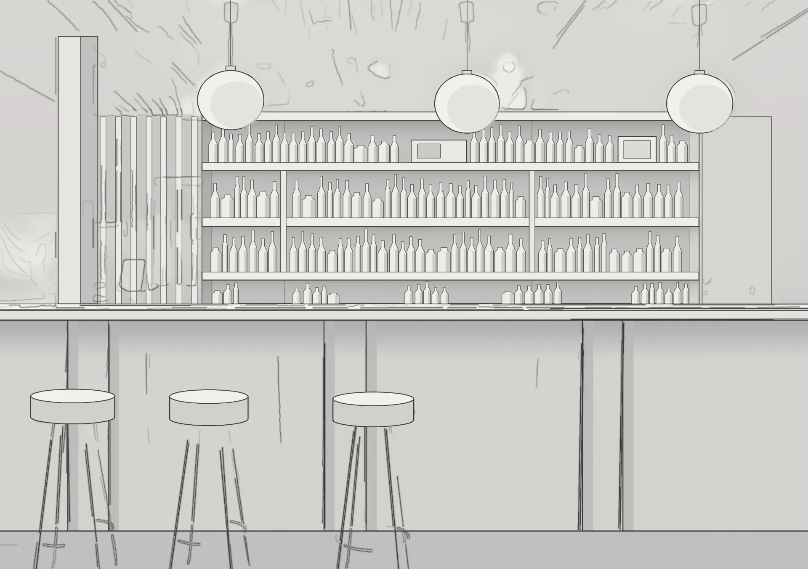
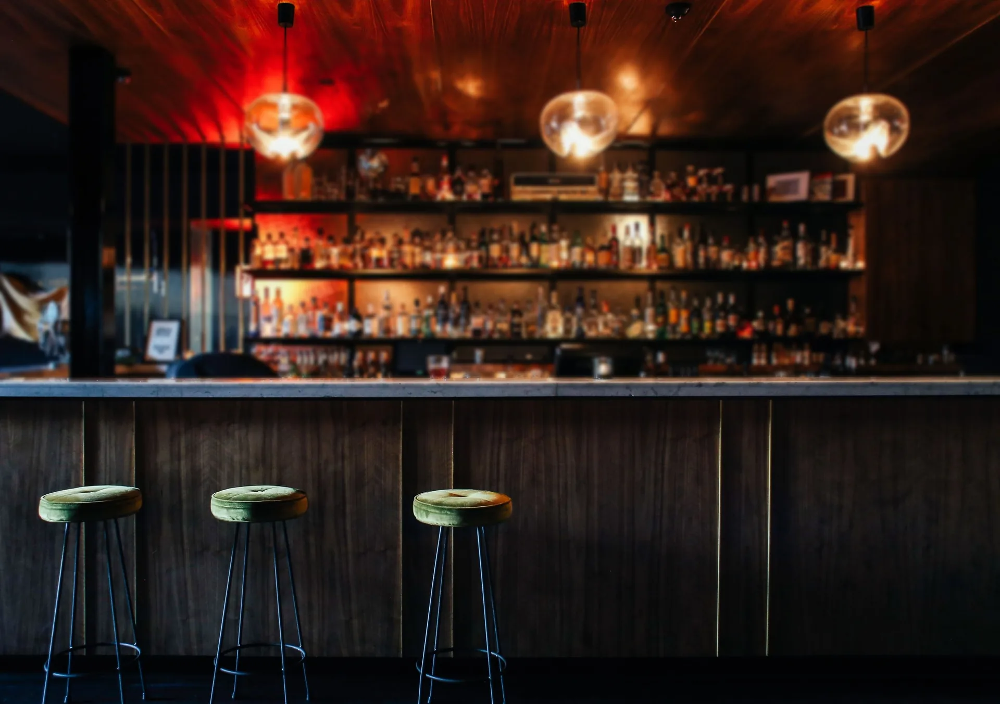

01 The drawing
Week 1 · Measured survey
One long counter, the back-bar on the wall behind it, a speed rail at every station.
02 The sketch
Week 2 · Concept
Drawn from a stool. The back-bar is the stage; the counter is the front row.
03 The shell
Week 4 · Carcass
Counter framed in steel, the back-bar wall lined and levelled, the ceiling battened out.
04 Joinery & fit-out
Weeks 6–8 · Back-bar and stools
The back-bar shelves go up, three pendants are hung, and three stools are set at 750 mm.
05 Finishes
Weeks 9–10 · Veneers and stone
Walnut on the front and across the ceiling, a honed marble top that takes a knock, green velvet on the stools.
06 Lights on
Week 11 · Scenes
Three blown-glass pendants, a red wash over the corner, the back-bar at 40 lux. Nothing brighter than the bottles.
07 Open
Opening night · 23:00
The light drops, the bottles glow, the counter fills.
In numbers
9 cities, from Bengaluru to Lisbon, each run by our own site lead.
On the date
A dated programme before we start, then a weekly site walk and a daily diary.
Approvals
We draw what the landlord and the fire officer need to see, from day one.
Made in our workshop
The back-bar comes from our own workshop, with a speed rail at every station.
Book a free site walkOne contract
Every finish on a sample board first. Then one fixed price for the design and the build.
Scenes, not switches
Three lighting scenes: early, full and last orders. Staff press one button, not twelve.
Read the projectDay 90
Ninety days after opening we come back and fix whatever service has found.
23:00 · Back-bar
Bar


Worth knowing
01 In numbers
9 cities, from Bengaluru to Lisbon, each run by our own site lead.
02 On the date
A dated programme before we start, then a weekly site walk and a daily diary.
03 Approvals
We draw what the landlord and the fire officer need to see, from day one.
04 Made in our workshop
The back-bar comes from our own workshop, with a speed rail at every station.
Book a free site walk05 One contract
Every finish on a sample board first. Then one fixed price for the design and the build.
06 Scenes, not switches
Three lighting scenes: early, full and last orders. Staff press one button, not twelve.
Read the project07 Day 90
Ninety days after opening we come back and fix whatever service has found.